JavaFX and Visual Studio Code
This section explains how to create a JavaFX application in Visual Studio Code.
JavaFX, Visual Studio Code and some extensions were used for the screenshots.
The following list shows their versions.
Download an appropriate JDK for your operating system and set JAVA_HOME to the JDK directory.
Refer to Install Java section for more information.
You can create a JavaFX modular or non-modular project and use the IDE tools, Maven or Gradle build tools.
Non-modular projects
IDE
Follow these steps to create a JavaFX non-modular project and use the IDE tools to build it and run it.
Alternatively, you can download a similar project from here.
Download the appropriate
JavaFX SDK
for your operating system and unzip it to a desired location, for instance
/Users/your-user/Downloads/javafx-sdk-11.
1. Create a Java project
Select Help -> Show All Commands, in the dropdown list, enter Java: Create Java project..., and select it.
 Select No build tools in the list as the project type.
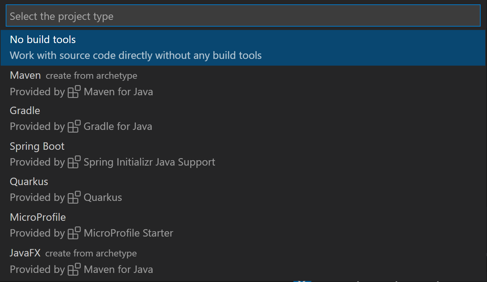
Then select the target location you want to store the new project in the file explorer.
Provide a name to the project, like HelloFX.
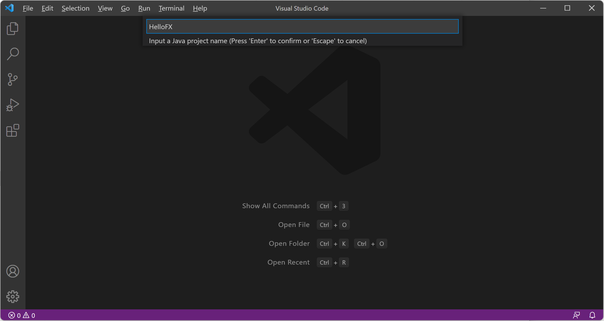
The new project will be opened in a new Visual Studio Code window.
You can open the App.java in the src/ to activate the Java extensions and import the project.
Select No build tools in the list as the project type.
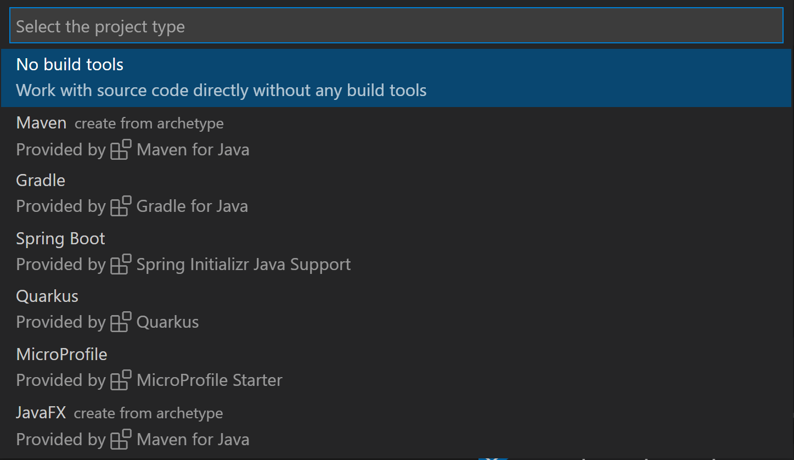
Then select the target location you want to store the new project in the file explorer.
Provide a name to the project, like HelloFX.
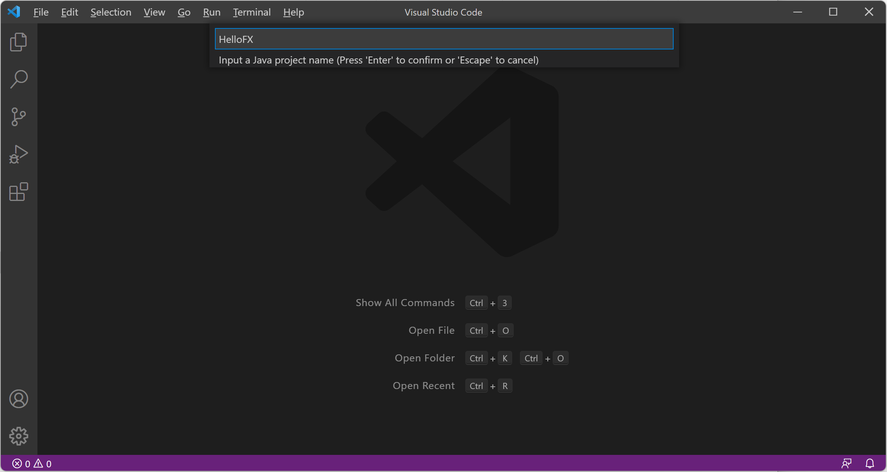
The new project will be opened in a new Visual Studio Code window.
You can open the App.java in the src/ to activate the Java extensions and import the project.
2. Add JavaFX dependencies
To add JavaFX as dependencies to your project, you can simply copy all the jar files from the lib folder of your downloaded JavaFX SDK, for instance
/Users/your-user/Downloads/javafx-sdk-11/lib/
to the lib folder of your project.
Or alternatively, you can add them via the Java Projects explorer. Click the + button beside the Referenced Library\ies,
select the JavaFX library jars to add them.
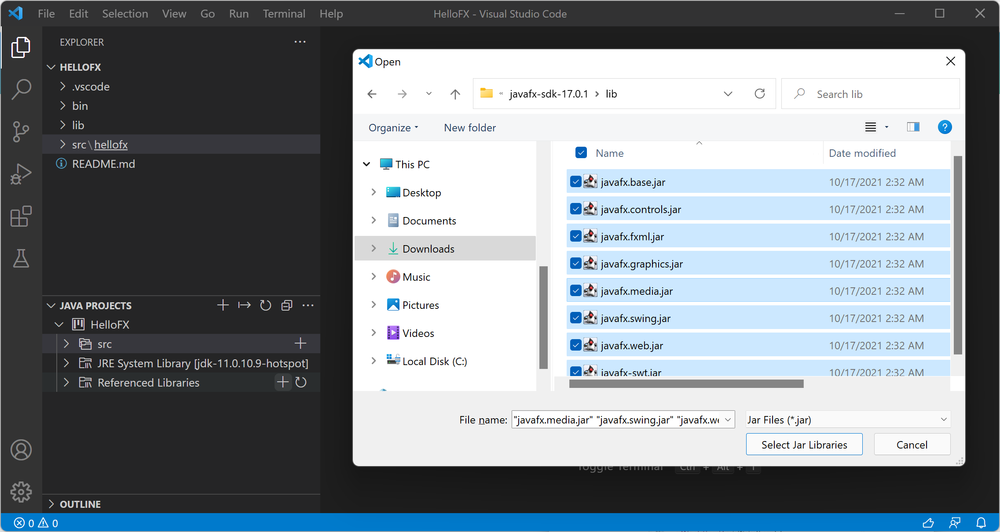
3.Add JavaFX classes
Remove the existing App.java. Create a new folder under src/ and name it as hellofx. You can add the main class App in the newly created folder, based on this one,
with an FXML file and
a controller.
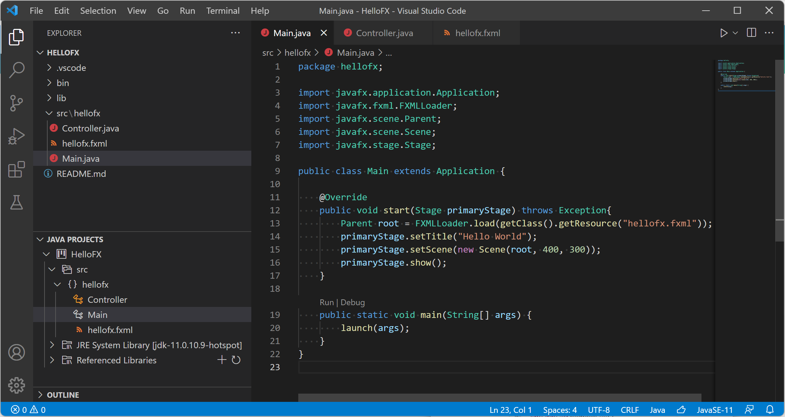
4. Create and update launch configurations
At the left side, switch to the Run and Debug viewlet, click create a launch.json file.
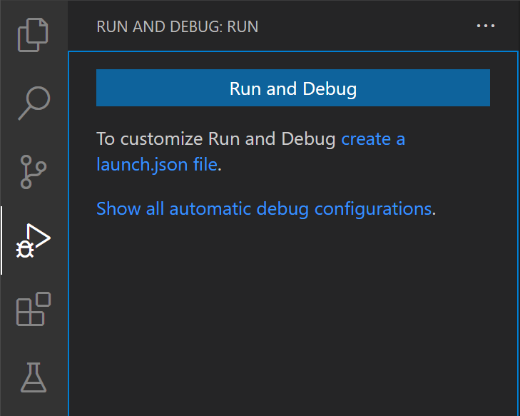
Or you can directly create a launch.json file in the .vscode folder based on this one.
Replace <JavaFX_lib_path> to the location lib folder of your downloaded JavaFX SDK.
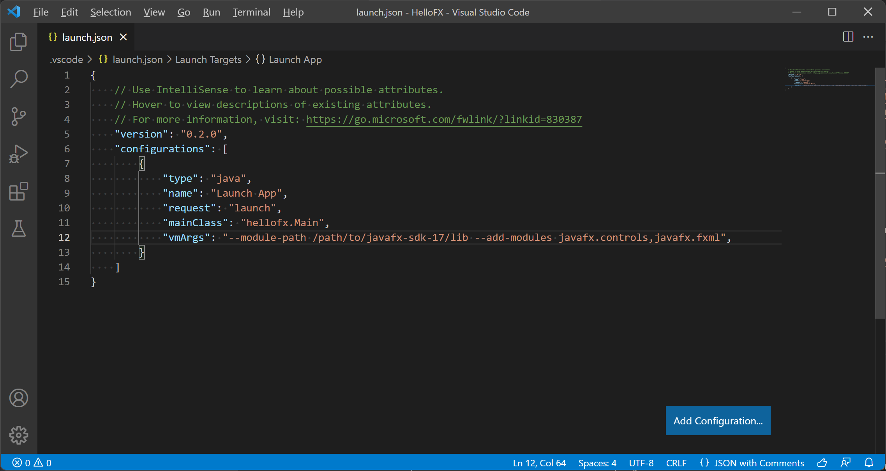
5. Run the project
In the Run and Debug viewlet, click the green run button to launch the application.
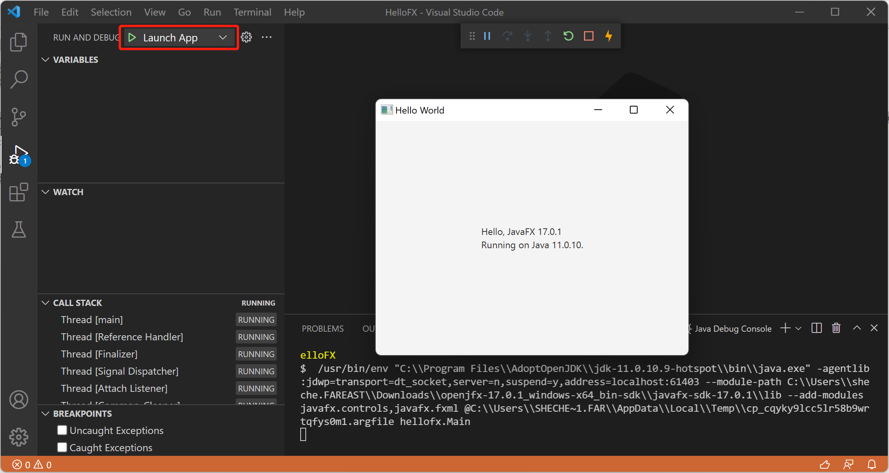
Maven
Follow these steps to create a JavaFX non-modular project and use the Maven tools to build it and run it.
Alternatively, you can download a similar project from here.
Make sure you have the Extension Pack for Java installed, which includs the required extensions to support Maven projects.
1. Create a Maven project
Select Help -> Show All Commands, in the dropdown list, enter Java: Create Java project..., and select it.
 Select JavaFX in the list as the project type.
Select JavaFX in the list as the project type.
 Input gruop id, like org.openjfx and artifact id, like hellofx and select the project location in the file explorer.
Then a command will be sent and executed in the terminal, which creates a JavaFX project via the Maven Archetype for you.
Click Open button, the new project will be opened in a new Visual Studio Code window.
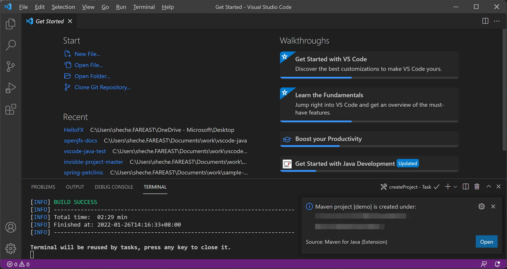
For a non-modular project, you can remove the module-info.java file.
Input gruop id, like org.openjfx and artifact id, like hellofx and select the project location in the file explorer.
Then a command will be sent and executed in the terminal, which creates a JavaFX project via the Maven Archetype for you.
Click Open button, the new project will be opened in a new Visual Studio Code window.
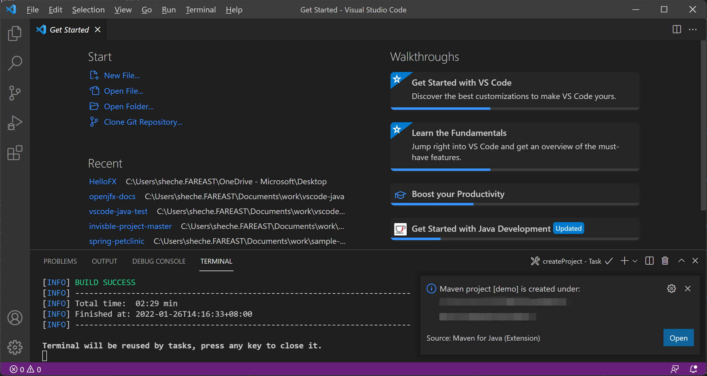
For a non-modular project, you can remove the module-info.java file.
2. Verify the pom
Edit the pom file,
and and verify it has the javafx.controls and javafx.fxml dependencies and the javafx-maven-plugin with
the mainClass set to org.openjfx.App.
And you can set the dependencies version to 17.0.1, and set the javafx-maven-plugin version to 0.0.8.
Maven manages the required dependencies: it will add javafx.base and javafx.graphics that are required by
javafx.controls and javafx.fxml, but most important, it will add the required classifier based on your platform, downloading
the specific platform jars.
 As for any other maven dependencies, these jars can be found in the local .m2 repository.
As for any other maven dependencies, these jars can be found in the local .m2 repository.
3. Verify the code
Verify the project contains the source code files, like the App main class:
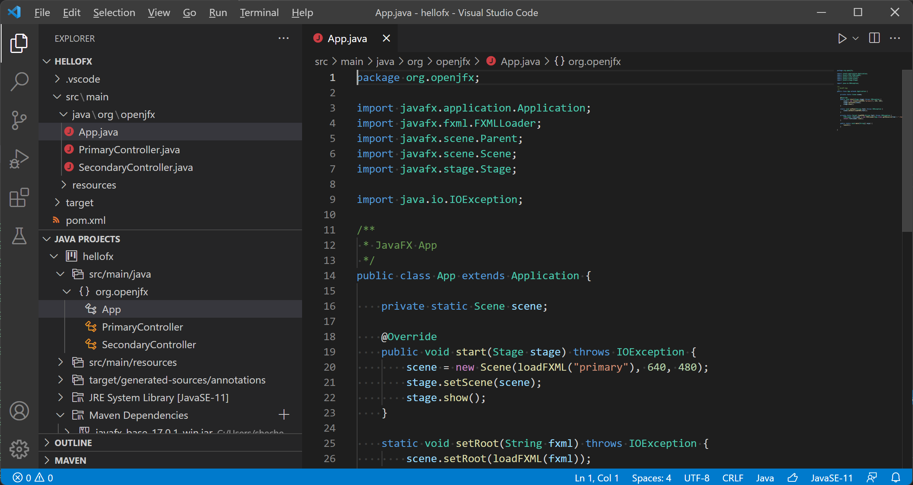
4. Run the project
To run the project, open the Maven explorer, click <YOUR_PROJECT_NAME> -> Plugins -> javafx -> javafx:run
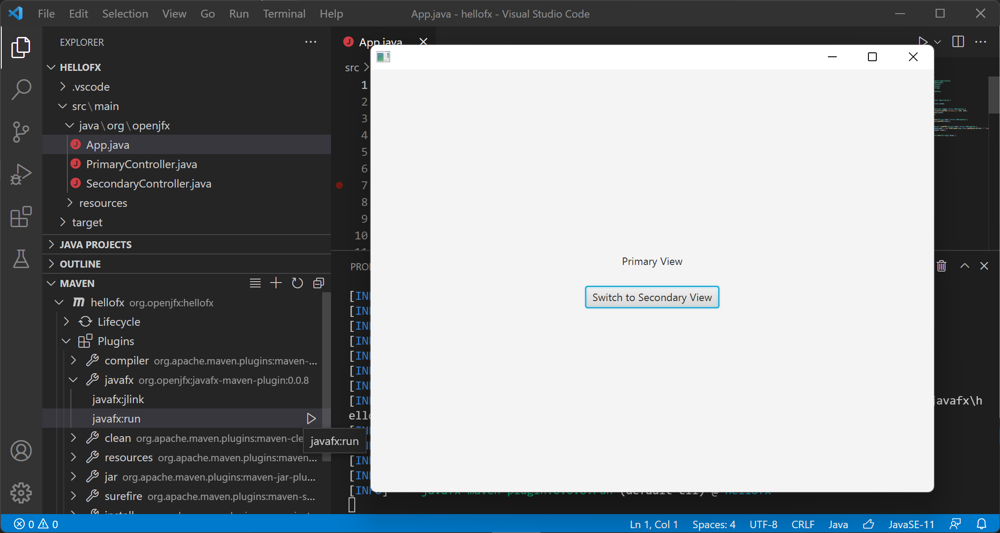
Alternatively, you can also open a terminal and run mvn clean javafx:run to run the project.
Gradle
Follow these steps to create a JavaFX project and use the Gradle tools to build it and run it.
Alternatively, you can download a similar project from here.
Make sure you have the Extension Pack for Java and Gradle for Java installed, which includs the required extensions to support Gradle projects.
1. Create a Gradle project
Select Help -> Show All Commands, in the dropdown list, enter Java: Create Java project..., and select it.
 Select Gradle in the list as the project type.
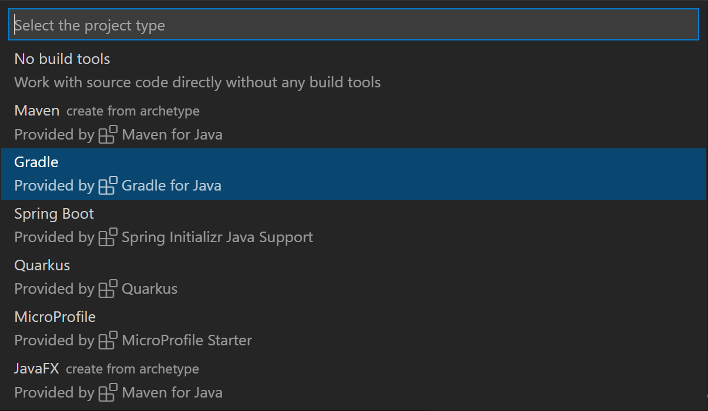
Select the project location in the file explorer and the build script DSL. Input the project name.
Then the Gradle for Java extension will create a new Gradle project for you.
The new project will be opened in a new Visual Studio Code window after the creation finished.
Select Gradle in the list as the project type.
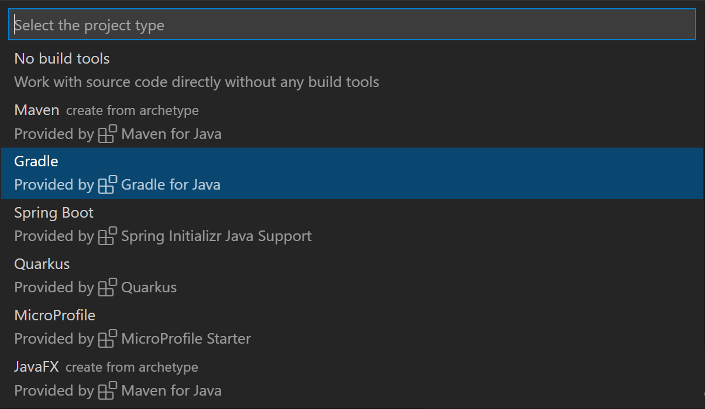
Select the project location in the file explorer and the build script DSL. Input the project name.
Then the Gradle for Java extension will create a new Gradle project for you.
The new project will be opened in a new Visual Studio Code window after the creation finished.
 Remove the app/src/test folder if you don't want to add tests for the project.
Remove the app/src/test folder if you don't want to add tests for the project.
2. Modify the build
Edit the build.gradle file under the app/ folder and replace it with this
build file, setting the
mainClassName accordingly to org.openjfx.MainApp.
Make sure the plugin org.openjfx.javafxplugin is applied and the version is set to 0.0.12
Similar to Maven, we can declare the required JavaFX modules in the build.gradle file.
However, for Gradle we need to apply the JavaFX gradle plugin:
javafx {
version = "17.0.1"
modules = [ 'javafx.controls', 'javafx.fxml' ]
}
Right click on the settings.gradle and select Update Project to update the gradle project.
 Visual Studio Code will list all the JavaFX dependencies after the update.
Visual Studio Code will list all the JavaFX dependencies after the update.
 As for any other Gradle dependencies, these jars can be found in the local .gradle repository.
As for any other Gradle dependencies, these jars can be found in the local .gradle repository.
3. Add the source code
Remove App.java and its package. Based on this MainApp class,
add its content to the project main class. Then add the controller
and the FXML and
the css
files.
You can add a main class MainApp, and an FXMLController class, and add to resources the FXML file.

4. Run the project
You can open the Gradle viewlet and click on <YOUR_PROJECT_NAME> -> build -> build to
build the project, and <YOUR_PROJECT_NAME> -> application -> run to run the project.
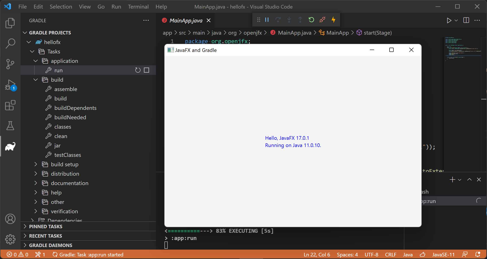
You can also open a terminal and run:
Modular projects
Maven
Follow these steps to create a JavaFX modular project and use the Maven tools to build it and run it.
Alternatively, you can download a similar project from here.
Make sure you have the Extension Pack for Java installed, which includs the required extensions to support Maven projects.
1. Create a Maven project
Select Help -> Show All Commands, in the dropdown list, enter Java: Create Java project..., and select it.
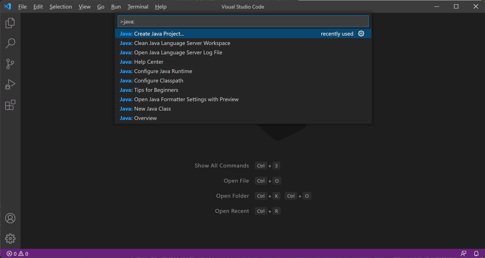
Select JavaFX in the list as the project type.
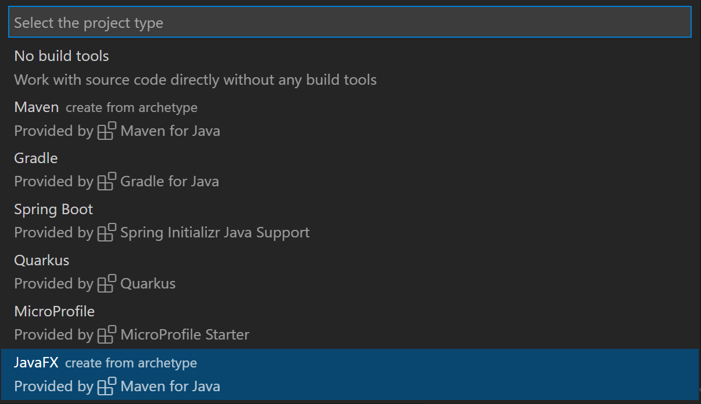
Input gruop id, like org.openjfx and artifact id, like hellofx and select the project location in the file explorer.
Then a command will be sent and executed in the terminal, which creates a JavaFX project via the Maven Archetype for you.
Click Open button, the new project will be opened in a new Visual Studio Code window.

2. Verify the pom
Edit the pom file,
and and verify it has the javafx.controls and javafx.fxml dependencies and the javafx-maven-plugin with
the mainClass set to org.openjfx.App.
And you can set the dependencies version to 17.0.1, and set the javafx-maven-plugin version to 0.0.8.
Maven manages the required dependencies: it will add javafx.base and javafx.graphics that are required by
javafx.controls and javafx.fxml, but most important, it will add the required classifier based on your platform, downloading
the specific platform jars.
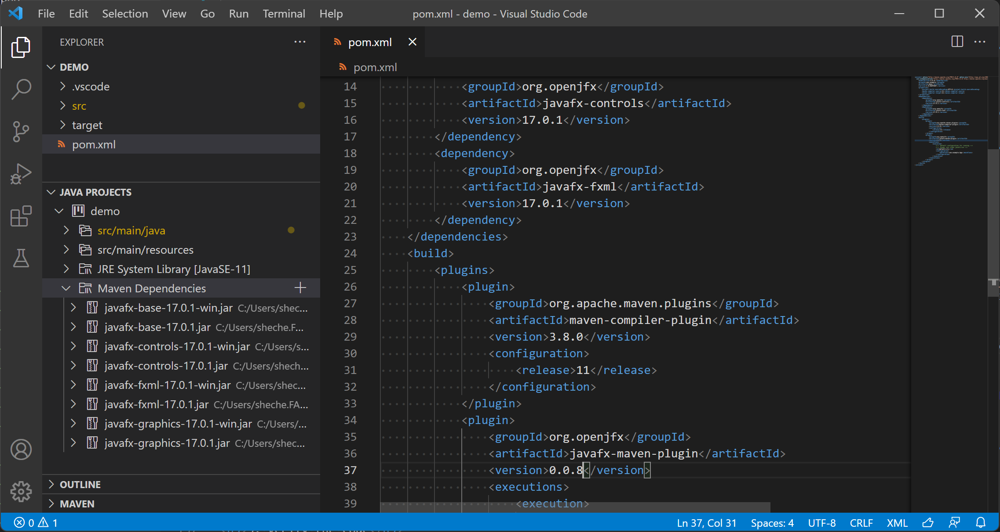
As for any other maven dependencies, these jars can be found in the local .m2 repository.
3. Verify the code
Verify the project contains the source code files, like the App main class:
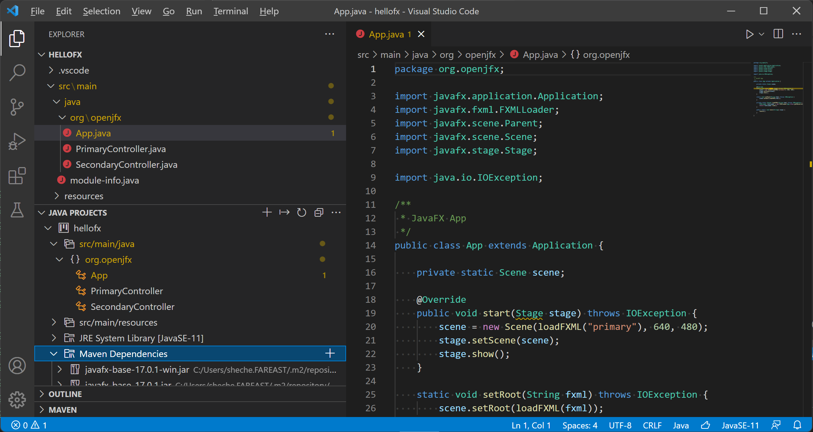
4. Run the project
To run the project, open the Maven explorer, click <YOUR_PROJECT_NAME> -> Plugins -> javafx -> javafx:run
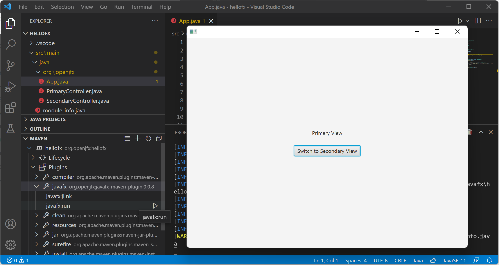
Alternatively, you can also open a terminal and run mvn clean javafx:run to run the project.
6. Create a custom runtime image
To create a custom runtime, open the Maven explorer, click <YOUR_PROJECT_NAME> -> Plugins -> javafx -> javafx:jlink
or run from a terminal with JAVA_HOME set:
mvn clean javafx:jlink
Note the plugin allows the usual options as the jlink command, as well as creating a
launcher or a zip with the custom image.
And after the image is built, you can run it from command line:
target/hellofx/bin/launcher
target\hellofx\bin\launcher.bat
Gradle
Follow these steps to create a JavaFX project and use the Gradle tools to build it and run it.
Alternatively, you can download a similar project from here.
Make sure you have the Extension Pack for Java and Gradle for Java installed, which includs the required extensions to support Gradle projects.
1. Create a Gradle project
Select Help -> Show All Commands, in the dropdown list, enter Java: Create Java project..., and select it.
 Select Gradle in the list as the project type.
Select Gradle in the list as the project type.
 Select the project location in the file explorer and the build script DSL. Input the project name.
Then the Gradle for Java extension will create a new Gradle project for you.
The new project will be opened in a new Visual Studio Code window after the creation finished.
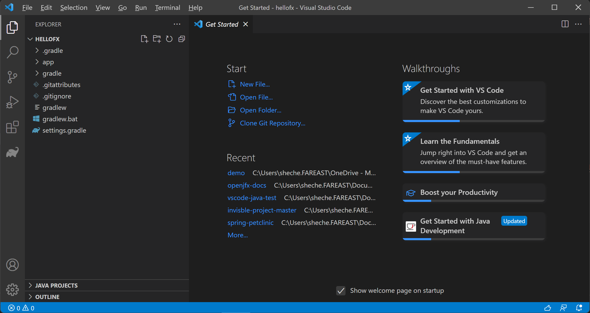
Remove the app/src/test folder if you don't want to add tests for the project.
Select the project location in the file explorer and the build script DSL. Input the project name.
Then the Gradle for Java extension will create a new Gradle project for you.
The new project will be opened in a new Visual Studio Code window after the creation finished.
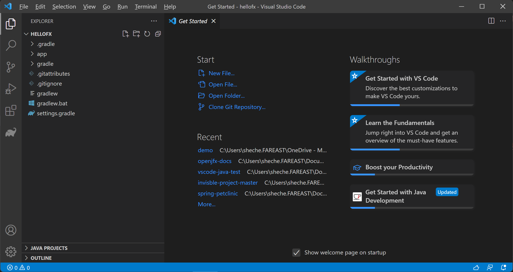
Remove the app/src/test folder if you don't want to add tests for the project.
2. Modify the build
Edit the build.gradle file and replace it with this
build file, setting the
mainClassName accordingly to org.openjfx.MainApp.
Similar to Maven, we can declare the required JavaFX modules in the build.gradle file.
However, for Gradle we need to apply the JavaFX gradle plugin:
javafx {
version = "17.0.1"
modules = [ 'javafx.controls', 'javafx.fxml' ]
}
Right click on the settings.gradle and select Update Project to update the gradle project.
 Visual Studio Code will list all the JavaFX dependencies after the update.
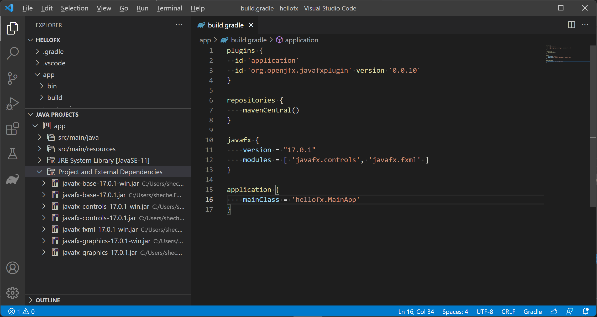
As for any other Gradle dependencies, these jars can be found in the local .gradle repository.
Visual Studio Code will list all the JavaFX dependencies after the update.
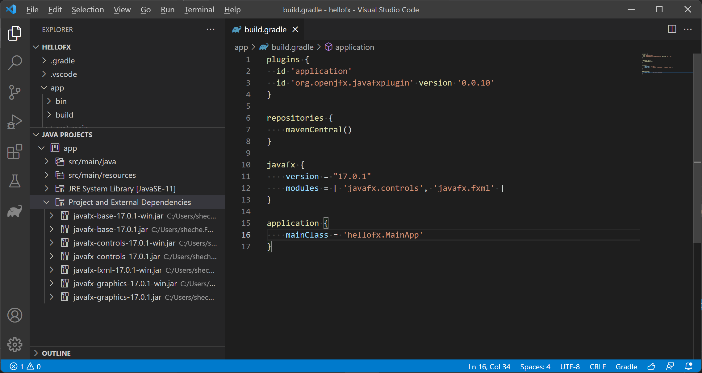
As for any other Gradle dependencies, these jars can be found in the local .gradle repository.
3. Add the module-info class
Add the module-info class, including the required modules javafx.controls and javafx.fxml.
Since FXML uses reflection to access the controller in the module, this has to be opened to javafx.fxml. Finally,
export the package org.openjfx.
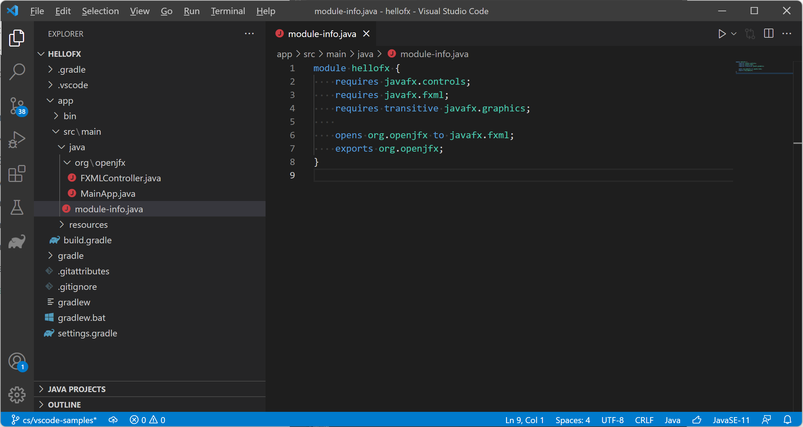
4. Add the source code
Remove App.java and its package. Based on this MainApp class,
add its content to the project main class. Then add the controller
and the FXML and
the css
files.
You can add a main class MainApp, and an FXMLController class, and add to resources the FXML file.
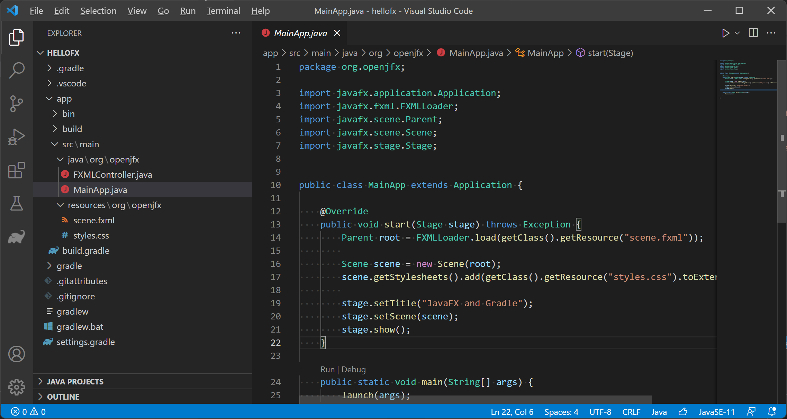
5. Run the project
You can open the Gradle viewlet and click on <YOUR_PROJECT_NAME> -> build -> build to
build the project, and <YOUR_PROJECT_NAME> -> application -> run to run the project.

You can also open a terminal and run:
6. Create a custom runtime image
To create a custom runtime, you can use the org.beryx.jlink plugin.
It can be easily combined with the JavaFX Gradle plugin.
plugins {
id 'application'
id 'org.openjfx.javafxplugin' version '0.0.12'
id 'org.beryx.jlink' version '2.25.0'
}
javafx {
version = "12"
modules = [ 'javafx.controls', 'javafx.fxml' ]
}
jlink {
options = ['--strip-debug', '--compress', '2', '--no-header-files', '--no-man-pages']
launcher {
name = 'hellofx'
}
}
Then open the Gradle viewlet and click on <YOUR_PROJECT_NAME> -> build -> jlink task to create the image.
To run the image:
app/build/image/bin/hellofx
app\build\image\bin\hellofx.bat